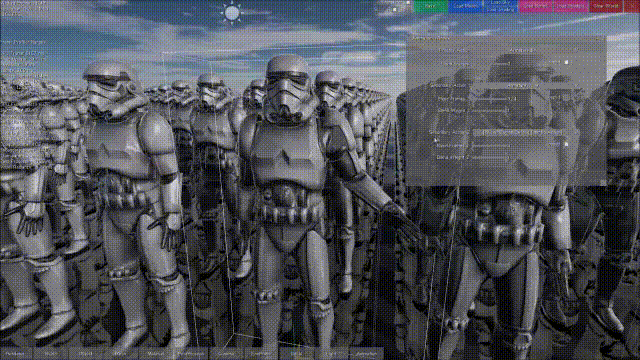

Skinning in a Compute Shader

Recently I have moved my mesh skinning implementation from a streamout geometry shader to compute shader. One reason for this was the ugly API for the streamout which I wanted to leave behind, but the more important reason was that this could come with several benefits.
First, compared to traditional skinning in a vertex shader, the render pipeline can be simplified, because we only perform skinning once for each mesh instead of in each render pass. So when we render our animated models multiple times, for shadow maps, Z-prepass, lighting pass, etc.. we are using regular vertex shaders for those passes with the vertex buffer swapped out for the pre-skinned vertex buffer. Also, we avoid many render state setup, like binding bone matrix buffers for each render pass. But this can be done in a geometry shader with stream out capabilities as well.
The compute shader approach has some other nice features compared to the first point. The render pipeline of Wicked Engine requires the creation of a screen space velocity buffer. For that, we need out previous frame animated vertex positions. If we don’t do it in a compute shader, we probably need to skin each vertex with the previous frame bone transforms in the current frame to get the velocity of the vertex which is currentPos – prevPos (If we have deinterleaved vertex buffers, we could avoid it by swapping vertex position buffers). In a compute shader, this becomes quite straight forward, however. Perform skinning only for the current frame bone matrices, but before writing out the skinned vertex to the buffer, load the previous value of the position and that is your previous frame vertex position. Write it out then to the buffer at the end.
In a compute shader, it is the developer who can assign the workload across several threads, not rely on the default vertex shader thread invocations. Also, the vertex shader stage has strict ordering specifications, because vertices must be written out in the exact same order they arrived. A compute shader can just randomly write into the skinned vertex buffer when it is finished. That said, it is also the developer’s responsibility to avoid writing conflits. Thankfully, it is quite trivial, because we are writing a linear array of data.
In compute shaders we can also make use of LDS memory to reduce memory reads. This can be implemented as each thread in a group only loads one bone data from main memory and stores it in LDS. Then the skinning computation just reads the bone data from LDS, and because each bone now doesn’t read 4 bones from VRAM but LDS, it has the potential for speedup. I have made a blog about this.
An other nice feature is the possibility lo leverage async compute in a newer graphics APIs like DirectX 12, Vulkan or the Playstation 4 graphics API. I don’t have experience with it, but I imagine it would be more taxing on the memory, because we would probably need to double buffer the skinned vertex buffers.
An other possible optimization is possible with this. If the performance is bottlenecked by the skinning in our scene, we can avoid skinning meshes in the distance for every other frame or so for example, so a kind of a level of detail technique for skinning.
The downside is that this technique comes with increased memory requirements, because we must write into global memory to provide the data up front for following render passes. We also avoid the fast on-chip memory of the GPU (memory for vertex shader to pixel shader parameters) for storing the skinned values.
Here is my shader implementation for skinning a mesh in a compute shader:
As you can see, quite simple code, I just call this compute shader with something like this:
struct Bone
{
float4 pose0;
float4 pose1;
float4 pose2;
};
StructuredBuffer<Bone> boneBuffer;
ByteAddressBuffer vertexBuffer_POS;
ByteAddressBuffer vertexBuffer_TAN;
ByteAddressBuffer vertexBuffer_BON;
RwByteAddressBuffer streamoutBuffer_POS;
RwByteAddressBuffer streamoutBuffer_TAN;
inline void Skinning(inout float3 pos, inout float3 nor, inout float3 tan, in float4 inBon, in float4 inWei)
{
if (any(inWei))
{
float4 p = 0;
float3 n = 0;
float3 t = 0;
float weisum = 0;
// force loop to reduce register pressure
// also enabled early-exit
[loop]
for (uint i = 0; ((i < 4) && (weisum < 1.0f)); ++i)
{
float4x4 m = float4x4(
boneBuffer[(uint)inBon[i]].pose0,
boneBuffer[(uint)inBon[i]].pose1,
boneBuffer[(uint)inBon[i]].pose2,
float4(0, 0, 0, 1)
);
p += mul(m, float4(pos.xyz, 1)) * inWei[i];
n += mul((float3x3)m, nor.xyz) * inWei[i];
t += mul((float3x3)m, tan.xyz) * inWei[i];
weisum += inWei[i];
}
pos.xyz = p.xyz;
nor.xyz = normalize(n.xyz);
tan.xyz = normalize(t.xyz);
}
}
[numthreads(64, 1, 1)]
void main(uint3 DTid : SV_DispatchThreadID, uint3 GTid : SV_GroupThreadID)
{
const uint stride_POS_NOR = 16;
const uint stride_TAN = 4;
const uint stride_BON_IND = 8;
const uint stride_BON_WEI = 8;
const uint fetchAddress_POS_NOR = DTid.x * stride_POS_NOR;
const uint fetchAddress_TAN = DTid.x * stride_TAN;
const uint fetchAddress_BON = DTid.x * (stride_BON_IND + stride_BON_WEI);
// Manual type-conversion for pos:
uint4 pos_nor_u = vertexBuffer_POS.Load4(fetchAddress_POS_NOR);
float3 pos = asfloat(pos_nor_u.xyz);
uint vtan = vertexBuffer_TAN.Load(fetchAddress_TAN);
// Manual type-conversion for normal:
float4 nor = 0;
{
nor.x = (float)((pos_nor_u.w >> 0) & 0x000000FF) / 255.0f * 2.0f - 1.0f;
nor.y = (float)((pos_nor_u.w >> 8) & 0x000000FF) / 255.0f * 2.0f - 1.0f;
nor.z = (float)((pos_nor_u.w >> 16) & 0x000000FF) / 255.0f * 2.0f - 1.0f;
nor.w = (float)((pos_nor_u.w >> 24) & 0x000000FF) / 255.0f; // wind
}
// Manual type-conversion for tangent:
float4 tan = 0;
{
tan.x = (float)((vtan >> 0) & 0x000000FF) / 255.0f * 2.0f - 1.0f;
tan.y = (float)((vtan >> 8) & 0x000000FF) / 255.0f * 2.0f - 1.0f;
tan.z = (float)((vtan >> 16) & 0x000000FF) / 255.0f * 2.0f - 1.0f;
tan.w = (float)((vtan >> 24) & 0x000000FF) / 255.0f * 2.0f - 1.0f;
}
// Manual type-conversion for bone props:
uint4 ind_wei_u = vertexBuffer_BON.Load4(fetchAddress_BON);
float4 ind = 0;
float4 wei = 0;
{
ind.x = (float)((ind_wei_u.x >> 0) & 0x0000FFFF);
ind.y = (float)((ind_wei_u.x >> 16) & 0x0000FFFF);
ind.z = (float)((ind_wei_u.y >> 0) & 0x0000FFFF);
ind.w = (float)((ind_wei_u.y >> 16) & 0x0000FFFF);
wei.x = (float)((ind_wei_u.z >> 0) & 0x0000FFFF) / 65535.0f;
wei.y = (float)((ind_wei_u.z >> 16) & 0x0000FFFF) / 65535.0f;
wei.z = (float)((ind_wei_u.w >> 0) & 0x0000FFFF) / 65535.0f;
wei.w = (float)((ind_wei_u.w >> 16) & 0x0000FFFF) / 65535.0f;
}
// Perform skinning:
Skinning(pos, nor.xyz, tan.xyz, ind, wei);
// Manual type-conversion for pos:
pos_nor_u.xyz = asuint(pos.xyz);
// Manual type-conversion for normal:
pos_nor_u.w = 0;
{
pos_nor_u.w |= (uint)((nor.x * 0.5f + 0.5f) * 255.0f) << 0;
pos_nor_u.w |= (uint)((nor.y * 0.5f + 0.5f) * 255.0f) << 8;
pos_nor_u.w |= (uint)((nor.z * 0.5f + 0.5f) * 255.0f) << 16;
pos_nor_u.w |= (uint)(nor.w * 255.0f) << 24; // wind
}
// Manual type-conversion for tangent:
vtan = 0;
{
vtan |= (uint)((tan.x * 0.5f + 0.5f) * 255.0f) << 0;
vtan |= (uint)((tan.y * 0.5f + 0.5f) * 255.0f) << 8;
vtan |= (uint)((tan.z * 0.5f + 0.5f) * 255.0f) << 16;
vtan |= (uint)((tan.w * 0.5f + 0.5f) * 255.0f) << 24;
}
// Store data:
streamoutBuffer_POS.Store4(fetchAddress_POS_NOR, pos_nor_u);
streamoutBuffer_TAN.Store(fetchAddress_TAN, vtan);
}There is quite a bit of unpacking data with custom code here, which wouldn’t be necessary if you were using formatted buffers for example (Buffer<T> in hlsl), but I was using ByteAddressBuffer here instead.
On the CPU side, you can dispatch a 1D thread group like this:
Dispatch((mesh.vertices.getCount() + 63) / 64, 1, 1);I am using precomputed skinning in Wicked Engine for a long time now, so can’t compare with the vertex shader approach, but it is definetly not worse than the streamout technique. I can imagine that for some titles, it might not be worth it to store additional vertex buffers to VRAM and avoid on-chip memory for skinning results. However, this technique could be a candidate in optimization scenarios because it is easy to implement and I think also easier to maintain because we can avoid the shader permutations for skinned and not skinned models.
Thanks for reading!